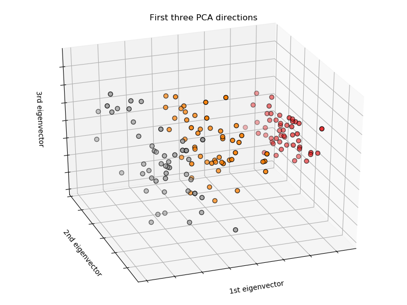

Dimensionality Reduction
Dimesionality Reduction
In the current data environment, there is a seemingly infinite amount of data available. It is encumbant on those analyzing data to decide which of the hundreds or thousands of variables are relevant, thereby avoiding a model that is overfitting with a high variance. However, if too many variables are eliminated, the model will be too simple and reflect high bias.

Image source: https://upload.wikimedia.org/wikipedia/commons/thumb/4/45/Dimension_levels.svg/800px-Dimension_levels.svg.png
Not only is a high dimensional space difficult to conceptualize or visualize, regions in these spaces typically have vast volumes.
Aurélien Géron summarizes one of the primary issues of high dimensionality in his book, Hands-On Machine Learning with Scikit-Learn, Keras & TensorFlow. Imagine 2 points in a unit square. The distance between them is about 0.52. In 3-D, it increases to about 0.66. In a 1,000,000-dimensional hypercube, it grows to almost 409. Volumes in high dimensional spaces are huge, resulting in points being spread far apart. This means that not only will training data points inherently have large distances between one another, but that new data points will also be far from training points, making predicitons less accurate. This is what is commonly framed as the "curse of dimensionality" [1].
Mathematical Approaches to Dimensionality Reduction
In dimensionality reduction, there are two mathematical approaches: projection and manifold learning.
1. Projection
Projection is when datapoints in a high-dimensional space are projected to a lower-dimensional subspace [1]. The 3-D datapoints are projected perpendicularly to the 2-D plane that best preserves the location of each point [1]. As a result, the relationship between the data point in the high dimensional space to the corresonding data point in the low dimensional space is linear.
Image source: https://github.com/ageron/handson-ml/blob/master/08_dimensionality_reduction.ipynb
2. Manifold Learning
Manifold learning entails modeling datapoints in a high dimensional space that can eventually be spread out to a low dimensional space while still preserving its local shape [1]. The relationship between the data point in the high dimensional space to the corresonding data point in the low dimensional space is nonlinear [2]. Think of it like projecting a globe on to an atlas. Another example is the Swiss roll below.
Swiss roll flattened without (left) and with (right) manifold learning.
Images source: https://github.com/ageron/handson-ml/blob/master/08_dimensionality_reduction.ipynb
Methods for Dimensionality Reduction
The methods to reduce dimensionality that this post will focus on are Principal Component Analysis (PCA) and t-Distributed Stochastic Neighbor Embedding (t-SNE). They are projection and manifold learning methods, respectively.
1. Principal Component Analysis (PCA)
In PCA, an n number of principal components, or new axes, are created while preserving the most amount of variance [1]. The relationship between the original dataset and the new principal components is linear [3]. The mean square distance is minimized between the original data and the new axis [1]. Therefore, if there are outliers in the data, this may adversely influence the principal component by potentially creating unreliable principal components that are skewed towards the outliers, but not the rest of the datapoints - i.e. the mean square error will be compromised by the outlier data, but not effectively minimized for the rest of the data.
The following example will illustrate the use of PCA on the Iris dataset from sklearn.
import pandas as pd
from sklearn.datasets import load_iris
from sklearn.decomposition import PCA
iris = load_iris()
iris = pd.DataFrame(iris.data, columns=iris.feature_names)
pca = PCA(n_components=3)
pca.fit(iris)
# Data source: https://scikit-learn.org/stable/auto_examples/decomposition/plot_pca_iris.html
The components attribute will display the principal components matrix. These are the axes that represent the maximum variance in the data [4].
pca.components_
The explained variance ratio sorts the components by the percentage of the variance explained [4]. In this example, the first component contains about 92% of the model's variance. The second explains about 5% and the third explains about 2%.
pca.explained_variance_ratio_
If the data were to be visualized, it would appear like the chart below. The three flowers are well separated.

Image source: https://scikit-learn.org/stable/auto_examples/datasets/plot_iris_dataset.html
More information on using PCA with sklearn can be found here: https://scikit-learn.org/stable/modules/generated/sklearn.decomposition.PCA.html
2. t-SNE
t-SNE is a nonlinear dimensionality reduction technique used to reconstruct high dimensional data into a low dimensional space by keeping similar data points close together and dissimilar data points apart from one another in the low dimensional space [1]. It is especially effective at visualization as it captures the structure - both local and global - of the data at many different scales [5]. This contrasts with some methods that tend to crowd points together [5].
Each time the t-SNE equation is run, it generates new results since each run generates probabilities, not distances [7]. The solution ulimately selected will be that with the lowest Kullback-Leiber divergence - a cost method that rewards the preservation of the local structure [5] . In other words, when transforming the data from a high to low dimensionality space, mapping similar and dissimilar points close to and far from one another, respectively, is optimal.
While preparing to run t-SNE, it is recommended to first use another dimenionality reduction technique first that will bring the total number of dimensions to a more reasonable number first (e.g. 50) [6]. This will aid in reducing the time to run t-SNE given that it is a computationally heavy techique, though it may not lead to improved results - this depends on the data [1].
Running t-SNE in sklearn is similar to other algorithms:
from sklearn.manifold import TSNE
tsne = TSNE()
# tsne.fit(data)
Parameters to be aware of while using t-SNE include: n_parameters and perplexity.
-
n_parameters sets the dimension of the space and 2 is the default [6]. While this can be increased, it should be done with caution since one of the main objectives in t-SNE is to reduce the crowding problem, which arises when too many datapoints are forced into a small space [7]. Thus, when embedding into a somewhat higher dimension space, the overcrowding problem does not arise and t-SNE might not be the optimal technique.
-
Perplexity is similar to the measure used in the nearest neighbors k in other manifold learning algorithms [7]. In general, a larger/denser dataset will require more perplexity and typical ranges are from 5 to 50 [7].
As mentioned above, the Kullback-Leiber divergence is the attribute used to measure the performance of the alogorithm. In sklearn, this attribute is the kl_divergence_ [6].
More information on using t-SNE in sklearn can be found here: https://scikit-learn.org/stable/modules/generated/sklearn.manifold.TSNE.html
Below is the t-SNE performance on the MNIST dataset. At a glance, one can see that t-SNE performs well in separtating the digits.

Image source: https://lvdmaaten.github.io/tsne/examples/mnist_tsne.jpg
Some applications of t-SNE include cancer search, music analysis, computer security resarch, and bioinformatics [8].
Sources:
[1] Géron, Aurélien. Hands-On Machine Learning with Scikit-Learn, Keras & TensorFlow. 2nd ed., O'Reilly, 2019.
[2] https://scikit-learn.org/stable/modules/manifold.html
[3] https://en.wikipedia.org/wiki/Principal_component_analysis
[4] https://scikit-learn.org/stable/modules/generated/sklearn.decomposition.PCA.html
[5] van der Maaten, Laurens and Hinton, Geoffrey. Visualizing ata using t-SNE. Journal of Machine Learning Research, November 2008, p.2579-2605.
Paper can also be found at: https://lvdmaaten.github.io/publications/papers/JMLR_2008.pdf
[6] https://scikit-learn.org/stable/modules/generated/sklearn.manifold.TSNE.html
[7] https://lvdmaaten.github.io/tsne/
[8] https://en.wikipedia.org/wiki/T-distributed_stochastic_neighbor_embedding